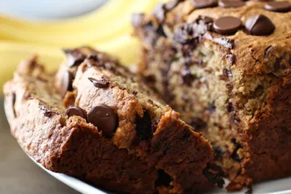

Banana Chocolate Chip Bread

This chocolate chip banana bread is super moist and tastes amazing!
Ingredients:
- Flour: This chocolate chip banana bread starts with all-purpose flour.
- Leaveners: Baking soda and baking powder act as leaveners, which means they help the bread rise.
- Salt: A pinch of salt enhances the overall flavor of the chocolate chip banana bread, but it won't make it taste salty.
- Bananas: You'll need to mash three ripe bananas.
- Milk: A tablespoon of milk adds moisture.
- Cinnamon: Ground cinnamon lends welcome warmth.
- Sugar: This recipe calls for white sugar, but some Allrecipes community members like to use a blend of brown and white sugars.
- Eggs: Whole eggs keep the banana bread moist and help bind the batter together.
- Chocolate chips: Of course, you'll need chocolate chips!
Steps:
- Mix the dry ingredients in one bowl; the bananas, milk, and cinnamon in another bowl; and beat the butter and sugar in a third bowl, adding the eggs one at a time.
- Stir the banana mixture into the butter mixture. Mix in the flour mixture. Fold in the chocolate chips.
- Pour the batter into a prepared loaf pan and bake in the preheated oven until a toothpick comes out clean.